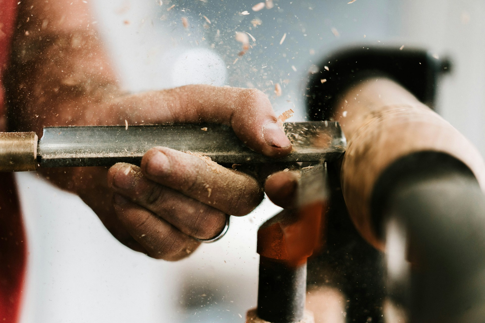
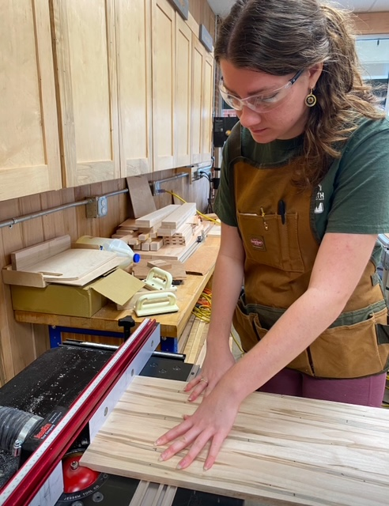

My Woodworking Experience
I have been doing woodworking off and on in my free time for the past 4 years. This may seem like a lot of time but between school and work I haven't been able to put in the work I feel like I need to, to become profients. I have had the opportunity to apprentice under a master carpenter for a little over a year, before we had to take a break due to his heath and my school schedule. When I do spend time in the shop I love wood turning, this is where you take a pice of wood and put it on a lathe that spins a high RPM while you cut it down to your desired shape using specific tools.

My fist Time in the Shop
The fist time I was able to use woodworking tools was in a class I took at Woodcraft of Chattanooga. It was at this class I fell in love with woodworking and decided to make a living of of it. It was a cuting board class and all we did was cover the basics of woodworking, like how to work safely, and to planout what you will need. then we got to the fun stuff like useing the table saw. but we also had times that we were waiting for the glue to dry. It's not all glamorous but I love it and being creative with my hands. Below is a photo of me in the shop working on one of my first big projects.

Why I love Woodworking
- I love working with my hands.
- Woodworking gives me the opportunity to be creative.
- I have the opportunity to learn more about Gods creation through the kinds of wood.
- I am always meeting new people in this line of work.